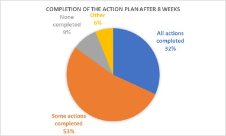

EnergyMate targeted low-income New Zealanders who were having difficulty paying their energy bills or keeping their houses warm.
The program decreased participants’ median daily energy use by 6.2% in the spring and by 2.3% in the summer; and increased use by 3.0% in the winter and by 8.4% in the autumn. This reflected the desired pattern of use wherein participants would make efficiency savings where possible, then use the savings to pay for more electricity in the colder months to stay warm and healthy.
Participants were in debt to their providers 20% of the time before the home visit, dropping to 13.3% after the visit. The amount of debt per bill also fell by an average of $335 per bill. Further, 18% of households were on the wrong plan before an EnergyMate visit, dropping to 8% after the visit.
Low-income New Zealanders were suffering from poor quality housing stock, high average rents, a housing shortage, and relatively insecure tenure rights for renters. A 2018-19 Electricity Price Review brought these realities to the surface. In response, the Electricity Retailers’ Association of New Zealand (ERANZ) launched EnergyMate in collaboration with its energy retailers (Top Energy, Unison, Electra, Powerco and Wellington Electricity) and the Energy Efficiency and Conservation Authority (EECA).
The program provided free in-home energy coaching for New Zealanders who had difficulty paying their energy bills or keeping their houses warm. It increased their energy efficiency knowledge and ensured they were on the most appropriate plan offered by their energy retailers. It offered tailored in-home advice, and support from trusted community members, who:
Initial interviews with low-income customers, electricity providers, and other industry experts found that these customers were generally highly cost-conscious, knew how much they spent on energy, and lived in poor-quality housing. Lack of money was the strongest barrier to making their homes more energy efficient. Other barriers included low energy and financial literacy, and low appliance efficiency.
Further, while 18% of renters in the EnergyMate program had energy efficiency issues that they needed their landlords to act on, many were reluctant to discuss with their landlords any heating problems and/or upgrades to address them, fearing their landlords might terminate their leases.
“I’m only renting, and you can only ask for so much [like a heat pump or fixing windows]; being a renter, I’ve got to be in their good books” (EnergyMate participant)
Roughly one third (31%) of participants were in debt to their electricity retailer (average debt of $444). Almost one in ten (9%) had their supply disconnected at some point within the past year. Despite all these challenges, some low-income EnergyMate participants were not comfortable using ‘energy hardship’ to describe their own situation.
Based on these research findings, the program chose to focus on building residents’ ability to manage their in-home energy use, a sphere of influence where the program would likely have the greatest impact.
Phase 1 monitoring and evaluation helped inform EnergyMate about the following.
The program targeted those living in high deprivation areas who were having difficulty paying their energy bills or keeping their houses warm. They may have experienced disconnection; the installation of pre-payment meters; credit/debt cycles; under-heating of their homes due to affordability; and/or insufficient heating.
Physical home upgrades were beyond the scope of the programme. They were delivered through complementary government-funded programmes (e.g. Warmer Kiwi Homes covered insulation and heating upgrades.)
Delivery targets were set for numbers of households which engaged with the programme through in-home energy coaching.
To deliver Phase 2 of this program, ERANZ partnered with Fincap, a non-government organization supporting 200 free financial capability/ budgeting services community providers. Eight of these community providers were selected to deliver Phase 2, via 16 trained EnergyMate coaches - community-based financial mentors who received specific training for the role. Each provider was contracted to deliver EnergyMate to “up to 100 households in high deprivation areas” in their communities.
Phase 2 took place between August 2020 and May 2021 in eight areas across New Zealand. Due to COVID-19, participation was lower than expected. In all, 319 homes were visited, and eight community party/meetings (“hui”) were held.
Phase 2 delivery mechanisms included the following:
Community providers were contracted to:
In addition, energy hardship training was provided for social service providers working with those at risk of energy hardship.
Typically, participants had already been identified as being in high need and would have already received interventions like heating, insulation and curtains. However, most had not previously had tailored home energy efficiency support. Participants gave informed consent to participate and share energy consumption data with ERANZ.
A total of eight community hui were held in seven regions, reaching at least 172 attendees. They communicated key messages in a lively and engaging manner, using games, quizzes, brochures, and prizes such as LED lightbulbs/electric heaters). Two of the aspects of the hui most appreciated by participants were hearing from a number of retailer representatives and being able to ask them questions, and the combination of budgeting advice with energy advice.
Addressing Key BarriersThe following table shows the key barriers to action and how they were addressed (Overcoming Specific Barriers).
|
Barrier |
How it was addressed |
|
Lack of money to pay for improvements Lack of recognition of their own energy hardship |
· The coaching service was offered free, many recommendations were cost-free, and 37% of participants were referred to additional support services (such as the Healthy Homes Initiative and curtain banks) that subsidized improvements to their houses and appliances. · Energy hardship training for social service providers working with those at risk of energy hardship. |
|
Low energy and financial literacy |
· Focused on building residents’ ability to manage their in-home energy use. · Co-created an action plan to reduce non-essential power usage. · Connected households with their electricity retailers to understand plans and payment options (three-way call.) · Connected them with additional support services as appropriate. · Community hui raised energy efficiency knowledge and provided hands-on learning about how to save energy, read power bills, and get the most suitable power plan. |
|
Low appliance efficiency |
· Several common action plan recommendations reduced appliance use. For example, turning off appliances at the wall instead of leaving them on standby could save $100 a year. · 37% of participants were referred to additional support services (such as the Healthy Homes Initiative and curtain banks) that subsidized improvements to their appliances. |
|
Forgetting to act, Inertia |
· Followed up after eight weeks to check progress. |
The following data sources were used in evaluating the program.
EnergyMate was primarily funded through electricity retailers, with funds held and governed by ERGANZ, which also absorbed some programme administration and oversight costs. Additional funding was provided by the government through the SEEC Programme, as well as regional lines companies. Government support played a critical role in both enabling programme delivery and reinforcing EnergyMate’s credibility and impact in helping whānau achieve warmer, healthier, and more energy-efficient homes.
Reach
Uptake and Energy Literacy

Completion of action plans after 8 weeks (n=226) from Phase 2 Evaluation Report
Reduced Energy Poverty
Successful Referrals to Additional Support Services to Tackle Energy Hardship
Arranging with the Electricity Retailers for a Favorable Payment Plan
EnergyMate Phase 2 Evaluation Report: www.eranz.org.nz/assets/documents/EnergyMate+Phase+2+Evaluation+Report+10+Sept+2021.pdf
Electricity Retailers’ & Generators’ Association, New Zealand: admin@erganz.org.nz
This case study was was written by Jay Kassirer in 2026 based on the Phase 2 evaluation report (linked to in the section “More Information” above) and review comments from Miranda Struthers, Accessible Energy Advocate for the Electricity Retailers’ and Generators' Association, New Zealand.
Search the Case Studies